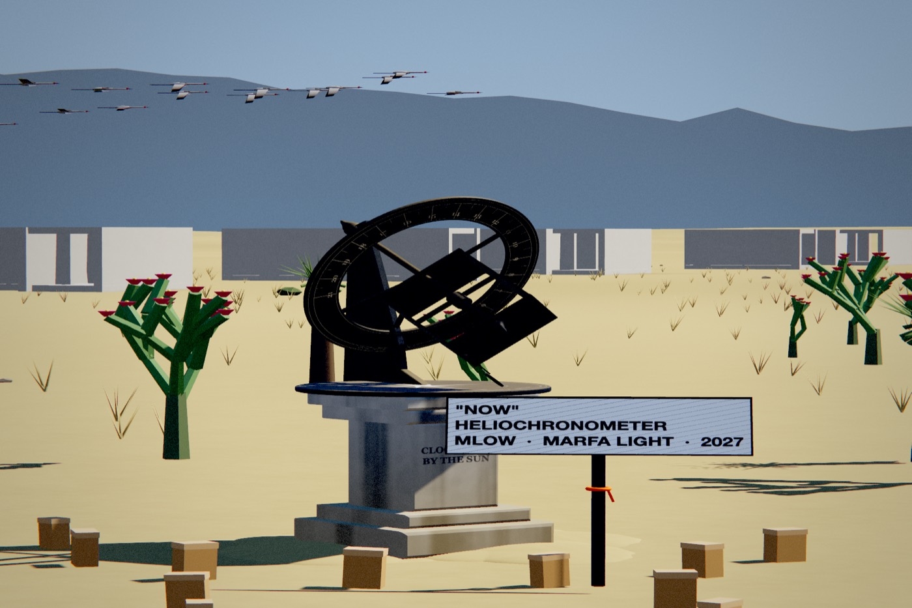
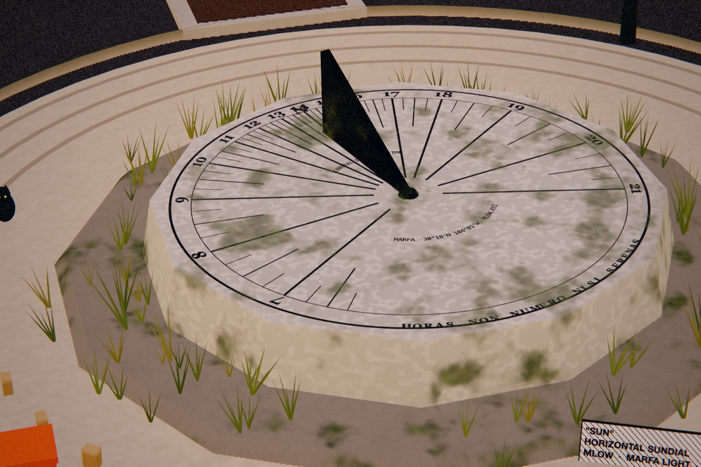
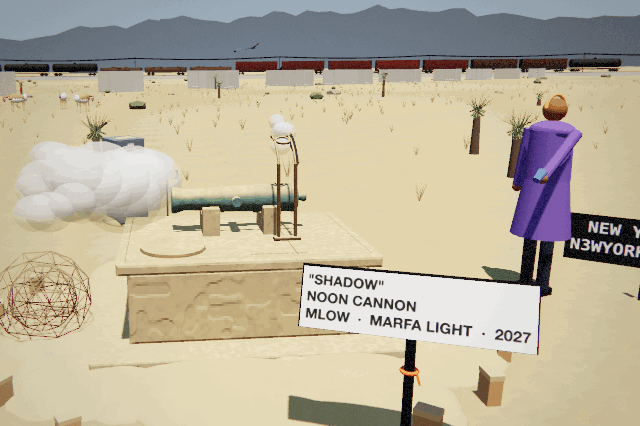
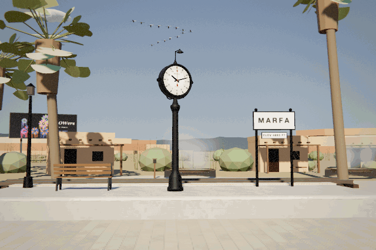
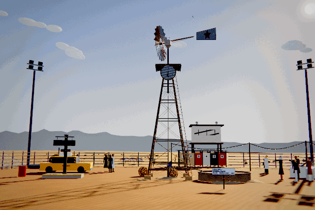
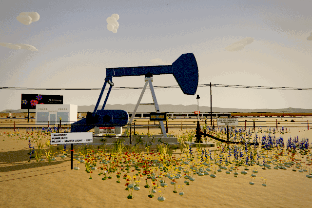

<meta charset="utf-8">
<meta name="viewport" content="width=device-width, initial-scale=1, viewport-fit=cover">
<title>Marfa Light</title>
<meta name="description" content="Marfa Light, a long-form generative series by MLow. Every token is a working clock for Marfa, Texas. Proposal for the Art Blocks x OpenSea Artist Residency.">
<link rel="preconnect" href="https://fonts.googleapis.com">
<link rel="preconnect" href="https://fonts.gstatic.com" crossorigin>
<link rel="stylesheet" href="https://fonts.googleapis.com/css2?family=Big+Shoulders+Display:wght@300;500;700;800&family=IBM+Plex+Mono:wght@400;500&family=Spectral:ital,wght@0,300;0,400;0,600;1,300;1,400&display=swap">
<style>
  /* The page is lit by the real sky over Marfa. Script sets data-sky on <html>
     from the sun's elevation at this minute; the resting state is night. */
  :root {
    color-scheme: dark;
    --bg: #0E1220; --bg2: #141A2C; --ink: #ECE5D8; --muted: #9097A9; --line: rgba(236,229,216,.15); --line2: rgba(236,229,216,.07);
    --accent: #F2B45A; --on-accent: #0E1220; --logo: none; --screen: #06070B;
    --display: "Big Shoulders Display", "Oswald", "Arial Narrow", Impact, sans-serif;
    --body: "Spectral", Georgia, "Times New Roman", serif;
    --mono: "IBM Plex Mono", Menlo, Consolas, monospace;
  }
  :root[data-sky="twilight"] { color-scheme: dark; --bg: #2A2236; --bg2: #33293F; --ink: #F3E7DA; --muted: #BAA9B5; --line: rgba(243,231,218,.17); --line2: rgba(243,231,218,.08); --accent: #FF9E62; --on-accent: #2A2236; --logo: none; }
  :root[data-sky="golden"] { color-scheme: light; --bg: #EACBA2; --bg2: #E3BE92; --ink: #23170F; --muted: #6A503E; --line: rgba(35,23,15,.2); --line2: rgba(35,23,15,.08); --accent: #9A3517; --on-accent: #FBEBD6; --logo: invert(1); }
  :root[data-sky="day"] { color-scheme: light; --bg: #D6E1E9; --bg2: #CAD7E1; --ink: #111820; --muted: #4E5C69; --line: rgba(17,24,32,.18); --line2: rgba(17,24,32,.07); --accent: #A74A16; --on-accent: #F4F7F9; --logo: invert(1); }

  * { box-sizing: border-box; }
  html { scroll-behavior: smooth; }
  body { margin: 0; background: var(--bg); color: var(--ink); font-family: var(--body); font-size: 19px; line-height: 1.55; transition: background-color 2.4s ease, color 2.4s ease;
    background-image: linear-gradient(var(--line2) 1px, transparent 1px); background-size: 100% 96px; }
  @media (prefers-reduced-motion: reduce) { html { scroll-behavior: auto; } *, *::before { transition: none !important; animation: none !important; } }
  a { color: inherit; text-decoration-color: var(--accent); text-underline-offset: 4px; text-decoration-thickness: 1px; }
  a:hover { color: var(--accent); }
  :focus-visible { outline: 2px solid var(--accent); outline-offset: 3px; }
  .wrap { max-width: 1320px; margin: 0 auto; padding-inline: clamp(16px, 4vw, 48px); }
  .mono, .eyebrow, .lab { font-family: var(--mono); font-size: 12px; letter-spacing: .12em; text-transform: uppercase; }
  .eyebrow, .lab { color: var(--muted); }
  .lab { font-size: 10.5px; }
  h1, h2, h3 { font-family: var(--display); font-weight: 800; text-transform: uppercase; line-height: .92; margin: 0; text-wrap: balance; }
  h2 { font-size: clamp(44px, 7vw, 104px); }
  h3 { font-size: 26px; font-weight: 700; line-height: 1; }
  p { margin: 0; max-width: 36em; }
  .muted { color: var(--muted); }
  section { padding-block: clamp(64px, 10vw, 140px) 0; }
  .sec-head { display: grid; grid-template-columns: minmax(0, 5fr) minmax(0, 4fr); gap: 16px 48px; align-items: end; margin-bottom: 40px; }
  .sec-head p { color: var(--muted); }
  .sec-head .eyebrow { grid-column: 1 / -1; display: flex; gap: 14px; align-items: center; }
  .sec-head .eyebrow b { font-weight: 500; color: var(--accent); }
  .sec-head .eyebrow::after { content: ""; flex: 1; height: 1px; background: var(--line); }

  /* bar */
  .bar { position: sticky; top: env(safe-area-inset-top, 0px); z-index: 20; background: color-mix(in srgb, var(--bg) 88%, transparent); backdrop-filter: blur(10px); -webkit-backdrop-filter: blur(10px); border-bottom: 1px solid var(--line); transition: background-color 2.4s ease; }
  .bar .wrap { display: flex; align-items: center; justify-content: space-between; gap: 16px; padding-block: 12px; }
  .bar img { height: 22px; width: auto; filter: var(--logo); display: block; }
  .bar nav { display: flex; gap: 20px; flex-wrap: wrap; }
  .bar nav a { text-decoration: none; font-family: var(--mono); font-size: 11.5px; letter-spacing: .12em; text-transform: uppercase; }
  .bar .left { display: flex; align-items: center; gap: 16px; min-width: 0; }
  .bar .left span { white-space: nowrap; overflow: hidden; text-overflow: ellipsis; }

  /* hero */
  .hero { padding-block: clamp(28px, 5vw, 56px) 0; }
  .hero-top { display: grid; grid-template-columns: minmax(0, 1fr) auto; gap: 8px 32px; align-items: end; }
  .clockface { font-family: var(--display); font-weight: 300; font-size: clamp(96px, 19vw, 280px); line-height: .8; font-variant-numeric: tabular-nums; letter-spacing: -.01em; }
  .clockface .sec { font-size: .32em; font-weight: 500; color: var(--accent); vertical-align: top; margin-left: .15em; letter-spacing: 0; }
  .where { display: flex; flex-direction: column; gap: 6px; text-align: right; padding-bottom: 12px; }
  .where b { font-family: var(--mono); font-weight: 500; font-size: 13px; letter-spacing: .1em; }
  .ruler { margin-top: 22px; }
  .ruler canvas { display: block; width: 100%; height: 26px; }
  .ruler .scale { display: flex; justify-content: space-between; margin-top: 6px; }
  .ruler .scale span { font-family: var(--mono); font-size: 10.5px; color: var(--muted); font-variant-numeric: tabular-nums; }
  .title-row { display: grid; grid-template-columns: minmax(0, 7fr) minmax(0, 5fr); gap: 20px 48px; align-items: end; margin-top: 30px; padding-top: 22px; border-top: 1px solid var(--line); }
  h1 { font-size: clamp(56px, 9.5vw, 148px); }
  .thesis { font-size: clamp(21px, 2vw, 26px); line-height: 1.35; font-weight: 300; }
  .thesis em { font-style: italic; color: var(--accent); }

  /* the instrument: screen + deck */
  .stage { margin-top: 36px; border: 1px solid var(--line); background: var(--bg2); transition: background-color 2.4s ease; }
  .screen { position: relative; background: var(--screen); aspect-ratio: 16 / 9; max-width: 100%; overflow: hidden; }
  .screen canvas { display: block; width: 100%; height: 100%; touch-action: none; cursor: grab; }
  .screen canvas:active { cursor: grabbing; }
  .screen .poster { position: absolute; inset: 0; width: 100%; height: 100%; object-fit: cover; }
  .hud { position: absolute; left: 0; right: 0; bottom: 0; display: flex; justify-content: space-between; gap: 6px 18px; flex-wrap: wrap; padding: 44px 16px 12px; background: linear-gradient(transparent, rgba(0,0,0,.6)); color: #F3EEE4; pointer-events: none; z-index: 3; }
  .hud span { font-family: var(--mono); font-size: 11.5px; letter-spacing: .1em; text-transform: uppercase; }
  .corner { position: absolute; top: 12px; left: 14px; z-index: 3; pointer-events: none; font-family: var(--mono); font-size: 10.5px; letter-spacing: .14em; text-transform: uppercase; color: #F3EEE4; display: flex; gap: 8px; align-items: center; text-shadow: 0 1px 3px rgba(0,0,0,.7); }
  .corner i { width: 8px; height: 8px; border-radius: 50%; background: #E5484D; box-shadow: 0 0 0 3px rgba(229,72,77,.25); }
  .corner i.off { background: #9097A9; box-shadow: none; }
  .deck { display: grid; grid-template-columns: repeat(12, minmax(0, 1fr)); border-top: 1px solid var(--line); }
  .cell { padding: 12px 14px 14px; display: flex; flex-direction: column; gap: 8px; min-width: 0; border-right: 1px solid var(--line); border-bottom: 1px solid var(--line); }
  .c-mode { grid-column: span 4; } .c-hour { grid-column: span 5; } .c-date { grid-column: span 3; border-right: 0; }
  .c-clock { grid-column: span 3; } .c-film { grid-column: span 3; } .c-view { grid-column: span 3; } .c-draw { grid-column: span 3; border-right: 0; }
  .c-hash { grid-column: span 7; } .c-save { grid-column: span 5; border-right: 0; }
  .row { display: flex; gap: 8px; align-items: center; flex-wrap: wrap; min-width: 0; }
  .seg { display: inline-flex; border: 1px solid var(--ink); max-width: 100%; }
  .seg button { border: 0; }
  .seg button + button { border-left: 1px solid var(--ink); }
  .btn, .seg button, select, input[type="text"], input[type="date"] { font-family: var(--mono); font-size: 12px; letter-spacing: .08em; text-transform: uppercase; border: 1px solid var(--ink); background: transparent; color: var(--ink); padding: 9px 12px; border-radius: 0; }
  .btn, .seg button { cursor: pointer; }
  .btn:hover, .seg button:hover { background: var(--ink); color: var(--bg); }
  .btn[aria-pressed="true"], .seg button[aria-pressed="true"], .btn.solid { background: var(--accent); border-color: var(--accent); color: var(--on-accent); }
  .btn:disabled { opacity: .45; cursor: progress; }
  select, input[type="text"], input[type="date"] { width: 100%; min-width: 0; background: var(--bg); }
  input[type="text"] { text-transform: none; letter-spacing: 0; }
  input[type="range"] { flex: 1; min-width: 0; accent-color: var(--accent); }
  .val { font-family: var(--mono); font-size: 14px; font-variant-numeric: tabular-nums; min-width: 5ch; }
  .grow { flex: 1; min-width: 0; }
  #sMsg { font-family: var(--mono); font-size: 11px; letter-spacing: .08em; color: var(--muted); text-transform: uppercase; }
  .tray { display: flex; gap: 12px; overflow-x: auto; padding: 12px 14px; border-bottom: 1px solid var(--line); }
  .tray figure { margin: 0; flex: 0 0 auto; width: 200px; display: flex; flex-direction: column; gap: 6px; }
  .tray img { width: 100%; height: auto; display: block; background: var(--screen); }
  .tray button { font-family: var(--mono); font-size: 10.5px; letter-spacing: .08em; text-transform: uppercase; background: none; border: 0; padding: 0; color: var(--ink); text-align: left; cursor: pointer; text-decoration: underline; text-decoration-color: var(--accent); text-underline-offset: 3px; }

  /* the wall label */
  .label { display: grid; grid-template-columns: minmax(0, 4fr) minmax(0, 8fr); gap: 0; }
  .label .id { padding: 18px 20px 20px; border-right: 1px solid var(--line); display: flex; flex-direction: column; gap: 10px; }
  .label .id h3 { font-size: 40px; }
  .label .id p { font-size: 16px; color: var(--muted); }
  .label .id .hashv { font-family: var(--mono); font-size: 11.5px; overflow-wrap: anywhere; color: var(--muted); }
  .spec { display: grid; grid-template-columns: repeat(auto-fill, minmax(160px, 1fr)); margin: 0; }
  .spec div { padding: 10px 14px 11px; border-right: 1px solid var(--line2); border-bottom: 1px solid var(--line2); min-width: 0; }
  .spec dt { font-family: var(--mono); font-size: 10px; letter-spacing: .12em; text-transform: uppercase; color: var(--muted); }
  .spec dd { margin: 2px 0 0; font-family: var(--mono); font-size: 13px; overflow-wrap: anywhere; }
  .spec .gen dt { color: var(--accent); }
  .spec .wide { grid-column: 1 / -1; }
  .keys { display: flex; flex-wrap: wrap; gap: 6px 18px; padding: 12px 14px; font-size: 14px; color: var(--muted); border-top: 1px solid var(--line); }
  .keys kbd { font-family: var(--mono); font-size: 11px; border: 1px solid var(--line); padding: 1px 6px; margin-right: 6px; color: var(--ink); }

  /* sky */
  .sky { display: grid; grid-template-columns: minmax(0, 7fr) minmax(0, 5fr); gap: 32px 40px; align-items: start; }
  .panel { border-top: 1px solid var(--ink); padding-top: 12px; display: flex; flex-direction: column; gap: 12px; min-width: 0; }
  .panel .ph { display: flex; justify-content: space-between; gap: 12px; }
  .sky svg { width: 100%; height: auto; display: block; overflow: visible; }
  .sky svg text { font-family: var(--mono); font-size: 11px; fill: var(--muted); letter-spacing: .05em; }
  .ephem { display: grid; grid-template-columns: repeat(4, minmax(0, 1fr)); margin: 8px 0 0; grid-column: 1 / -1; border-top: 1px solid var(--line); }
  .ephem div { padding: 12px 14px 12px 0; border-bottom: 1px solid var(--line2); }
  .ephem dt { font-family: var(--mono); font-size: 10.5px; letter-spacing: .1em; text-transform: uppercase; color: var(--muted); }
  .ephem dd { margin: 3px 0 0; font-family: var(--display); font-weight: 500; font-size: 34px; line-height: 1; font-variant-numeric: tabular-nums; }
  .ephem dd small { font-family: var(--mono); font-size: 11px; color: var(--muted); margin-left: 6px; }
  .legend { display: flex; gap: 16px; flex-wrap: wrap; }
  .legend span { font-family: var(--mono); font-size: 10.5px; letter-spacing: .1em; text-transform: uppercase; color: var(--muted); display: inline-flex; gap: 6px; align-items: center; }
  .legend i { width: 18px; height: 0; border-top: 2px solid var(--accent); }
  .legend i.m { border-top: 2px dashed var(--muted); }
  .legend i.a { width: 8px; height: 8px; border: 0; background: var(--ink); border-radius: 50%; }

  /* statement */
  .statement { display: grid; grid-template-columns: minmax(0, 5fr) minmax(0, 6fr); gap: 32px 64px; }
  .statement .big { font-family: var(--display); font-weight: 700; text-transform: uppercase; font-size: clamp(38px, 4.6vw, 68px); line-height: .95; text-wrap: balance; }
  .statement .big span { color: var(--accent); }
  .prose { display: flex; flex-direction: column; gap: 18px; }
  .spine { display: grid; grid-template-columns: repeat(4, minmax(0, 1fr)); margin-top: 56px; border-top: 1px solid var(--ink); }
  .spine div { padding: 16px 18px 4px 0; display: flex; flex-direction: column; gap: 6px; }
  .spine div + div { padding-left: 18px; border-left: 1px solid var(--line); }
  .spine b { font-family: var(--display); font-weight: 500; font-size: clamp(48px, 6vw, 84px); line-height: .85; font-variant-numeric: tabular-nums; }
  .spine span { font-size: 15px; color: var(--muted); }

  /* one day */
  .day { display: grid; grid-template-columns: minmax(0, 7fr) minmax(0, 4fr); gap: 0 48px; }
  .frame-wrap { position: sticky; top: calc(env(safe-area-inset-top, 0px) + 72px); align-self: start; }
  .frame { position: relative; aspect-ratio: 3 / 2; max-width: 100%; background: var(--screen); overflow: hidden; }
  .frame img, .frame canvas { position: absolute; inset: 0; width: 100%; height: 100%; object-fit: cover; opacity: 0; transition: opacity .9s ease; }
  .frame .on { opacity: 1; }
  .frame-cap { display: flex; justify-content: space-between; align-items: end; gap: 12px; margin-top: 12px; }
  .frame-cap b { font-family: var(--display); font-weight: 300; font-size: 56px; line-height: .9; font-variant-numeric: tabular-nums; }
  .ticks { display: flex; gap: 4px; margin-top: 10px; }
  .ticks i { flex: 1; height: 3px; background: var(--line); transition: background-color .4s; }
  .ticks i.on { background: var(--accent); }
  .steps { display: flex; flex-direction: column; }
  .step { min-height: 62vh; display: flex; flex-direction: column; justify-content: center; gap: 10px; padding-block: 24px; opacity: .38; transition: opacity .5s; }
  .step.on { opacity: 1; }
  .step .t { font-family: var(--mono); font-size: 13px; letter-spacing: .12em; color: var(--accent); }
  .step h3 { font-size: 34px; }

  /* grids of images */
  .filters { display: flex; flex-wrap: wrap; gap: 8px; margin-bottom: 24px; }
  .grid { display: grid; grid-template-columns: repeat(4, minmax(0, 1fr)); gap: 1px; background: var(--line); border: 1px solid var(--line); }
  .card { background: var(--bg); display: flex; flex-direction: column; text-align: left; padding: 0 0 16px; border: 0; color: var(--ink); cursor: pointer; font: inherit; transition: background-color 2.4s ease; }
  .card img { width: 100%; height: auto; aspect-ratio: 3 / 2; object-fit: cover; display: block; max-width: 100%; transition: filter .3s; }
  .card:hover img { filter: brightness(1.08) contrast(1.04); }
  .card .meta { display: flex; flex-direction: column; gap: 5px; padding: 12px 14px 0; }
  .card .top { display: flex; justify-content: space-between; gap: 8px; align-items: baseline; }
  .card .n { font-family: var(--mono); font-size: 11px; color: var(--muted); }
  .card h3 { font-size: 24px; }
  .card p { font-size: 14.5px; line-height: 1.4; color: var(--muted); display: -webkit-box; -webkit-line-clamp: 4; -webkit-box-orient: vertical; overflow: hidden; }
  .card .keeps { font-family: var(--mono); font-size: 10.5px; letter-spacing: .12em; text-transform: uppercase; color: var(--accent); }
  .card .where2 { font-family: var(--mono); font-size: 10.5px; letter-spacing: .06em; text-transform: uppercase; color: var(--muted); }
  .wall { display: grid; grid-template-columns: repeat(6, minmax(0, 1fr)); gap: 1px; background: var(--line); border: 1px solid var(--line); }
  .thumb { appearance: none; border: 0; padding: 0; background: var(--screen); cursor: pointer; display: block; aspect-ratio: 3 / 2; width: 100%; max-width: 100%; position: relative; overflow: hidden; }
  .thumb canvas { display: block; width: 100%; height: 100%; }
  .thumb span { position: absolute; left: 7px; right: 7px; bottom: 6px; font-family: var(--mono); font-size: 9.5px; letter-spacing: .06em; text-transform: uppercase; color: #fff; text-shadow: 0 1px 2px #000; text-align: left; }
  .thumb .wait { position: absolute; inset: 0; display: grid; place-items: center; font-family: var(--mono); font-size: 10px; letter-spacing: .12em; color: #6d7385; text-transform: uppercase; }
  .films { display: grid; grid-template-columns: repeat(7, minmax(0, 1fr)); gap: 10px; }
  .films figure { margin: 0; display: flex; flex-direction: column; gap: 6px; }
  .films figcaption { font-family: var(--mono); font-size: 11px; letter-spacing: .1em; text-transform: uppercase; color: var(--muted); }
  .films .thumb { cursor: default; }
  .head2 { display: flex; justify-content: space-between; align-items: end; gap: 12px 24px; flex-wrap: wrap; margin: 56px 0 18px; }
  .head2 h3 { font-size: 34px; }

  /* film */
  .film video { width: 100%; max-width: 100%; display: block; background: #000; aspect-ratio: 16 / 9; }
  .loops { display: grid; grid-template-columns: repeat(4, minmax(0, 1fr)); gap: 12px; margin-top: 12px; }
  .loops figure { margin: 0; display: flex; flex-direction: column; gap: 6px; }
  .loops img { width: 100%; height: auto; aspect-ratio: 3 / 2; object-fit: cover; display: block; background: var(--screen); }
  .loops figcaption { font-family: var(--mono); font-size: 11px; letter-spacing: .1em; text-transform: uppercase; color: var(--muted); }

  /* places */
  .strip { display: grid; grid-auto-flow: column; grid-auto-columns: minmax(280px, 36%); gap: 12px; overflow-x: auto; padding-bottom: 12px; scroll-snap-type: x mandatory; }
  .strip figure { margin: 0; scroll-snap-align: start; display: flex; flex-direction: column; gap: 8px; }
  .strip img { width: 100%; height: auto; aspect-ratio: 3 / 2; object-fit: cover; display: block; }
  .strip figcaption { font-size: 15px; line-height: 1.4; }
  .strip figcaption b { display: block; font-family: var(--display); text-transform: uppercase; font-size: 22px; line-height: 1; margin-bottom: 4px; }
  .places { display: grid; grid-template-columns: repeat(2, minmax(0, 1fr)); gap: 0 56px; margin: 40px 0 0; }
  .places div { display: grid; grid-template-columns: 13em minmax(0, 1fr); gap: 16px; padding: 12px 0; border-top: 1px solid var(--line); }
  .places dt { font-family: var(--mono); font-size: 12px; letter-spacing: .1em; text-transform: uppercase; padding-top: 4px; }
  .places dd { margin: 0; font-size: 16px; color: var(--muted); }

  /* traits and eggs */
  .traits { display: grid; grid-template-columns: repeat(3, minmax(0, 1fr)); gap: 28px 40px; margin: 0; }
  .traits > div { display: flex; flex-direction: column; gap: 8px; min-width: 0; }
  .traits dt { font-family: var(--display); font-weight: 700; font-size: 24px; text-transform: uppercase; line-height: 1; padding-top: 12px; border-top: 1px solid var(--ink); }
  .traits dd { margin: 0; display: flex; flex-direction: column; gap: 5px; }
  .bar-row { display: grid; grid-template-columns: minmax(0, 1fr) 3.5em; gap: 8px; align-items: center; font-size: 14px; }
  .bar-row .lbl { position: relative; padding: 2px 6px; overflow: hidden; white-space: nowrap; text-overflow: ellipsis; }
  .bar-row .lbl i { position: absolute; left: 0; top: 0; bottom: 0; background: color-mix(in srgb, var(--accent) 26%, transparent); }
  .bar-row .lbl span { position: relative; }
  .bar-row .pc { font-family: var(--mono); font-size: 12px; text-align: right; color: var(--muted); font-variant-numeric: tabular-nums; }
  .eggs { display: grid; grid-template-columns: repeat(3, minmax(0, 1fr)); gap: 32px 40px; }
  .eggs h3 { font-family: var(--mono); font-size: 12px; font-weight: 400; letter-spacing: .12em; padding-bottom: 10px; border-bottom: 1px solid var(--ink); margin-bottom: 4px; }
  .eggs dl { margin: 0; display: flex; flex-direction: column; }
  .eggs dl div { padding: 10px 0; border-bottom: 1px solid var(--line2); }
  .eggs dt { font-weight: 600; font-size: 17px; }
  .eggs dd { margin: 2px 0 0; color: var(--muted); font-size: 15px; line-height: 1.45; }

  /* memories */
  .memories { display: grid; grid-template-columns: repeat(6, minmax(0, 1fr)); gap: 10px; }
  .memories figure { margin: 0; display: flex; flex-direction: column; gap: 6px; }
  .memories img { width: 100%; height: auto; aspect-ratio: 1; object-fit: cover; display: block; }
  .memories figcaption { font-family: var(--mono); font-size: 10.5px; letter-spacing: .1em; text-transform: uppercase; color: var(--muted); }

  /* ledger */
  .ledger { display: grid; grid-template-columns: repeat(3, minmax(0, 1fr)); gap: 0; border-top: 1px solid var(--ink); }
  .ledger > div { padding: 20px 24px 8px 0; display: flex; flex-direction: column; gap: 12px; }
  .ledger > div + div { padding-left: 24px; border-left: 1px solid var(--line); }
  .ledger ul { margin: 0; padding: 0; list-style: none; display: flex; flex-direction: column; gap: 10px; font-size: 17px; }
  .ledger li { padding-left: 18px; position: relative; }
  .ledger li::before { content: ""; position: absolute; left: 0; top: .6em; width: 8px; height: 8px; }
  .ledger .done li::before { background: var(--ink); }
  .ledger .eye li::before { border: 1px solid var(--ink); }
  .ledger .not li { color: var(--muted); }
  .ledger .not li::before { border: 1px dashed var(--muted); }

  /* weeks */
  .weeks { display: grid; grid-template-columns: repeat(4, minmax(0, 1fr)); gap: 1px; background: var(--line); border: 1px solid var(--line); }
  .week { background: var(--bg); padding: 22px 20px 26px; display: flex; flex-direction: column; gap: 12px; transition: background-color 2.4s ease; }
  .week .wk { font-family: var(--display); font-weight: 300; font-size: 88px; line-height: .8; color: var(--accent); }
  .week h3 { font-size: 30px; }
  .week p { font-size: 16px; color: var(--muted); }
  .needs { display: grid; grid-template-columns: repeat(2, minmax(0, 1fr)); gap: 16px 48px; margin-top: 40px; }
  .needs ul { margin: 0; padding-left: 1.1em; display: flex; flex-direction: column; gap: 8px; font-size: 17px; }

  /* artist */
  .artist { display: grid; grid-template-columns: minmax(0, 5fr) minmax(0, 7fr); gap: 32px 64px; }
  .facts { display: grid; grid-template-columns: repeat(2, minmax(0, 1fr)); border-top: 1px solid var(--ink); align-self: start; }
  .facts div { padding: 18px 16px 18px 0; border-bottom: 1px solid var(--line); display: flex; flex-direction: column; gap: 4px; }
  .facts div:nth-child(even) { padding-left: 16px; border-left: 1px solid var(--line); }
  .facts b { font-family: var(--display); font-weight: 500; font-size: clamp(44px, 5vw, 68px); line-height: .9; font-variant-numeric: tabular-nums; }
  .facts span { font-size: 15px; color: var(--muted); }
  .works { list-style: none; margin: 0; padding: 0; display: flex; flex-direction: column; border-top: 1px solid var(--ink); }
  .works li { display: grid; grid-template-columns: 4.5em minmax(0, 1fr); gap: 12px; padding: 11px 0; border-bottom: 1px solid var(--line); font-size: 17px; }
  .works li span:first-child { font-family: var(--mono); font-size: 12px; color: var(--muted); padding-top: 4px; }

  footer { margin-top: clamp(72px, 10vw, 140px); border-top: 1px solid var(--line); padding-block: 28px 48px; }
  footer .wrap { display: flex; justify-content: space-between; gap: 16px 32px; flex-wrap: wrap; font-size: 16px; }
  .end { font-family: var(--display); font-weight: 800; text-transform: uppercase; font-size: clamp(48px, 11vw, 180px); line-height: .85; padding-top: 32px; }
  .end span { color: var(--accent); font-variant-numeric: tabular-nums; }

  @media (max-width: 1100px) {
    .c-mode, .c-hour { grid-column: span 6; } .c-hour { border-right: 0; } .c-date { grid-column: span 12; }
    .c-clock, .c-film, .c-view, .c-draw { grid-column: span 6; } .c-film, .c-draw { border-right: 0; } .c-clock, .c-view { border-right: 1px solid var(--line); }
    .c-hash, .c-save { grid-column: span 12; border-right: 0; }
    .bar nav { display: none; }
    .wall { grid-template-columns: repeat(4, minmax(0, 1fr)); }
    .films { grid-template-columns: repeat(4, minmax(0, 1fr)); }
    .memories { grid-template-columns: repeat(4, minmax(0, 1fr)); }
  }
  @media (max-width: 1000px) {
    .grid { grid-template-columns: repeat(3, minmax(0, 1fr)); }
    .traits, .eggs { grid-template-columns: repeat(2, minmax(0, 1fr)); }
    .weeks { grid-template-columns: repeat(2, minmax(0, 1fr)); }
    .sky { grid-template-columns: minmax(0, 1fr); }
    .label { grid-template-columns: minmax(0, 1fr); }
    .label .id { border-right: 0; border-bottom: 1px solid var(--line); }
  }
  @media (max-width: 760px) {
    body { font-size: 17px; }
    .sec-head, .title-row, .statement, .artist, .needs { grid-template-columns: minmax(0, 1fr); }
    .hero-top { grid-template-columns: minmax(0, 1fr); }
    .where { text-align: left; }
    .grid { grid-template-columns: repeat(2, minmax(0, 1fr)); }
    .wall { grid-template-columns: repeat(3, minmax(0, 1fr)); }
    .day { grid-template-columns: minmax(0, 1fr); }
    .frame-wrap { top: calc(env(safe-area-inset-top, 0px) + 50px); z-index: 2; background: var(--bg); padding-bottom: 8px; }
    .frame-cap b { font-size: 40px; }
    .step { min-height: 44vh; }
    .loops, .spine, .ephem { grid-template-columns: repeat(2, minmax(0, 1fr)); }
    .spine div:nth-child(3) { padding-left: 0; border-left: 0; }
    .places { grid-template-columns: minmax(0, 1fr); }
    .ledger { grid-template-columns: minmax(0, 1fr); }
    .ledger > div + div { padding-left: 0; border-left: 0; border-top: 1px solid var(--line); }
    .screen { aspect-ratio: 4 / 3; }
    .c-mode, .c-hour, .c-clock, .c-film, .c-view, .c-draw { grid-column: span 12; border-right: 0 !important; }
  }
  @media (max-width: 480px) {
    .grid, .traits, .weeks, .eggs { grid-template-columns: minmax(0, 1fr); }
    .wall, .films, .memories { grid-template-columns: repeat(2, minmax(0, 1fr)); }
    .places div { grid-template-columns: minmax(0, 1fr); gap: 2px; }
    .strip { grid-auto-columns: 82%; }
    .facts { grid-template-columns: minmax(0, 1fr); }
    .facts div:nth-child(even) { padding-left: 0; border-left: 0; }
  }
</style>

<header class="bar">
  <div class="wrap">
    <div class="left"><span class="mono muted" id="barSky">Marfa sky</span></div>
    <nav aria-label="Sections">
      <a href="#token">Token</a><a href="#sky">Sky</a><a href="#idea">Idea</a><a href="#day">A day</a><a href="#clocks">Clocks</a><a href="#draws">Draws</a><a href="#film">Film</a><a href="#residency">Residency</a><a href="#artist">Artist</a>
    </nav>
  </div>
</header>

<main>
  <div class="wrap hero">
    <div class="hero-top">
      <div class="clockface"><span id="bigTime">--:--</span><span class="sec" id="bigSec">00</span></div>
      <div class="where">
        <span class="eyebrow">Now, in Marfa, Texas</span>
        <b id="zoneLine">Central Time</b>
        <b>30.3095° N · 104.0206° W</b>
        <b id="sunLine">Sun --° · Moon --%</b>
      </div>
    </div>
    <div class="ruler" aria-hidden="true">
      <canvas id="ruler" width="1200" height="26"></canvas>
      <div class="scale"><span>00:00</span><span>03:00</span><span>06:00</span><span>09:00</span><span>12:00</span><span>15:00</span><span>18:00</span><span>21:00</span><span>24:00</span></div>
    </div>
    <div class="title-row">
      <div>
        <span class="eyebrow">A proposal for the Art Blocks x OpenSea Artist Residency · Spring 2027</span>
        <h1>Marfa Light</h1>
      </div>
      <p class="thesis">Every token is a working clock for Marfa, Texas. The hash chooses the clock, how it is made, and where it stands. <em>The minute comes from the sky.</em></p>
    </div>

    <div class="stage" id="token">
      <div class="screen" id="screen">
        
        <canvas id="hero" role="img" aria-label="A clock in Marfa, drawn live"></canvas>
        <div class="corner"><i id="liveDot"></i><span id="modeTag">Live · Marfa time</span></div>
        <div class="hud"><span id="hud1">Loading the engine</span><span id="hud2">three.js r124 · one file</span></div>
      </div>
      <div class="deck">
        <div class="cell c-mode"><span class="lab">Time</span>
          <div class="seg" role="group" aria-label="Time">
            <button type="button" id="mLive" aria-pressed="true">Live</button>
            <button type="button" id="mLapse" aria-pressed="false">Time-lapse</button>
            <button type="button" id="mRes" aria-pressed="false">Residency</button>
          </div>
        </div>
        <div class="cell c-hour"><label class="lab" for="scrub">Hour of the day</label>
          <div class="row"><input id="scrub" type="range" min="0" max="23.98" step="0.02" value="12"><span class="val" id="scrubVal">12:00</span></div>
        </div>
        <div class="cell c-date"><label class="lab" for="pickDate">Date in Marfa</label><input id="pickDate" type="date" min="2026-01-01" max="2030-12-31"></div>
        <div class="cell c-clock"><label class="lab" for="pickClock">Clock</label><select id="pickClock"></select></div>
        <div class="cell c-film"><label class="lab" for="pickFilm">Film stock</label><select id="pickFilm"></select></div>
        <div class="cell c-view"><label class="lab" for="pickView">Camera</label><select id="pickView"></select></div>
        <div class="cell c-draw"><span class="lab">Token</span><div class="row"><button type="button" class="btn solid grow" id="rand">Draw a new token</button></div></div>
        <div class="cell c-hash"><label class="lab" for="hashIn">Token hash</label>
          <div class="row"><input id="hashIn" type="text" spellcheck="false" autocomplete="off" class="grow" placeholder="0x followed by 64 hex digits"><button type="button" class="btn" id="hashGo">Load</button><button type="button" class="btn" id="hashCopy">Copy</button></div>
        </div>
        <div class="cell c-save"><span class="lab">Save this token</span>
          <div class="row"><button type="button" class="btn" id="sStill">Still · PNG</button><button type="button" class="btn" id="sGif">3 s · GIF</button><button type="button" class="btn" id="sDay">The day · GIF</button></div>
          <span id="sMsg" aria-live="polite">Saved files also collect in a tray below.</span>
        </div>
      </div>
      <div class="tray" id="tray" hidden></div>
      <div class="label">
        <div class="id">
          <span class="lab">Wall label</span>
          <h3 id="lClock">Clock</h3>
          <p id="lLine"></p>
          <span class="hashv" id="lHash"></span>
        </div>
        <dl class="spec" id="spec"></dl>
      </div>
      <div class="keys">
        <span><kbd>Drag</kbd>walk around</span><span><kbd>Click</kbd>read what you clicked</span><span><kbd>Ctrl + scroll</kbd>move closer</span>
        <span><kbd>[ ]</kbd>an hour</span><span><kbd>, .</kbd>a day</span><span><kbd>Space</kbd>hold time</span><span><kbd>C</kbd>camera</span><span><kbd>F</kbd>film</span>
        <span><kbd>P</kbd>still</span><span><kbd>G</kbd>GIF</span><span><kbd>Shift G</kbd>the day</span><span><kbd>I</kbd>traits</span><span><kbd>?</kbd>all keys</span>
      </div>
    </div>
  </div>

  <section id="sky" class="wrap">
    <div class="sec-head">
      <span class="eyebrow"><b>Computed</b> on this page, for today</span>
      <h2>The sky over Marfa</h2>
      <p>The same sun and moon model the clocks use. The page's own colour follows it, set by the sun's elevation at this minute: night, twilight, the low sun, and day.</p>
    </div>
    <div class="sky">
      <div class="panel">
        <div class="ph"><span class="lab">Elevation through the day, local time</span><div class="legend"><span><i></i>Sun</span><span><i class="m"></i>Moon</span></div></div>
        <div id="chart" role="img" aria-label="Sun and moon elevation over Marfa today"></div>
      </div>
      <div class="panel">
        <div class="ph"><span class="lab">The sky dome, plan view, north up</span><div class="legend"><span><i></i>Today</span><span><i class="a"></i>Noon, all year</span></div></div>
        <div id="dome" role="img" aria-label="The sun's path across the sky today and the analemma"></div>
      </div>
      <dl class="ephem" id="ephem"></dl>
    </div>
  </section>

  <section id="idea" class="wrap">
    <div class="statement">
      <div class="big">The piece is not a picture of time. <span>It keeps it.</span></div>
      <div class="prose">
        <p>The code computes the sun and the moon for Marfa's coordinates and the minute you are looking, turns the stars by sidereal time, and lights the scene from those numbers alone.</p>
        <p>Nine of the twenty-nine clocks read the sky. Eight are sundials built for latitude 30.3°, from a horizontal dial to a heliochronometer and a noon cannon fired by a burning glass. Their shadows are real and read Central Time. The ninth is a nocturnal that reads the hour from the Big Dipper. The rest keep time by flaps, water, sand, words, gears, fire, wind, and the turning of the Earth under a Foucault pendulum.</p>
        <p>Each stands somewhere real: Chinati's field of concrete boxes, US 90 across from Prada Marfa, the Marfa Lights viewing area after dark, with the Davis and Chinati Mountains on the horizon.</p>
        <p class="muted">One JavaScript file on three.js r124, the version Art Blocks stores onchain. It reads a token hash and the clock, loads nothing, and computes every texture. No model runs at any point.</p>
      </div>
    </div>
    <div class="spine" id="spine"></div>
  </section>

  <section id="day" class="wrap">
    <div class="sec-head">
      <span class="eyebrow"><b>One token</b> · April 17, 2027, inside the residency</span>
      <h2>A day at one dial</h2>
      <p>A horizontal sundial, drawn by the engine in your browser at seven moments of one day. Scroll, and the sun moves.</p>
    </div>
    <div class="day">
      <div class="frame-wrap">
        <div class="frame" id="frame"></div>
        <div class="frame-cap"><b id="frameTime">--:--</b><span class="mono muted" id="frameSun">Sun</span></div>
        <div class="ticks" id="ticks"></div>
      </div>
      <div class="steps" id="steps"></div>
    </div>
  </section>

  <section id="clocks" class="wrap">
    <div class="sec-head">
      <span class="eyebrow" id="countLine">29 clocks · 19 places · 3 courts</span>
      <h2>Every kind of clock</h2>
      <p>One token of each kind, rendered by the engine. Choose one to bring that exact token up live, at this minute in Marfa.</p>
    </div>
    <div class="filters" role="group" aria-label="Filter clocks">
      <button type="button" class="btn" data-f="all" aria-pressed="true">All 29</button>
      <button type="button" class="btn" data-f="sky" aria-pressed="false">Read the sky</button>
      <button type="button" class="btn" data-f="machine" aria-pressed="false">Machines</button>
      <button type="button" class="btn" data-f="desert" aria-pressed="false">High desert</button>
    </div>
    <div class="grid" id="grid"></div>
  </section>

  <section id="draws" class="wrap">
    <div class="sec-head">
      <span class="eyebrow"><b>Live</b> · straight from the generator, in your browser</span>
      <h2>Twelve draws</h2>
      <p>Random hashes, drawn one at a time so the page stays quick. No two share their full set of traits. Choose one to open it above.</p>
    </div>
    <div class="row" style="margin-bottom:18px"><button type="button" class="btn solid" id="more">Draw twelve more</button><span class="mono muted" id="drawNote"></span></div>
    <div class="wall" id="wall"></div>
    <div class="head2"><h3>Seven film stocks</h3><p class="muted" style="font-size:16px">One token on all seven. Every token is shot on one; press F on the live token to try the others.</p></div>
    <div class="films" id="films"></div>
  </section>

  <section id="film" class="wrap film">
    <div class="sec-head">
      <span class="eyebrow"><b>66 seconds</b> · real engine frames · score on a 120 BPM grid</span>
      <h2>The film</h2>
      <p>Every shot is the engine rendering a token, cut to a score synthesised on the same timeline. Sound plays when you press play.</p>
    </div>
    <video controls preload="none" playsinline poster="img/film-poster.jpg" src="img/film.mp4"></video>
    <div class="loops">
      <figure><figcaption>Noon cannon at noon</figcaption></figure>
      <figure><figcaption>Station clock</figcaption></figure>
      <figure><figcaption>Windmill clock</figcaption></figure>
      <figure><figcaption>Pumpjack</figcaption></figure>
    </div>
  </section>

  <section id="places" class="wrap">
    <div class="sec-head">
      <span class="eyebrow"><b>19 places</b> · behind every one, the real skyline</span>
      <h2>Where they stand</h2>
      <p>The Davis Mountains to the north, the Chinati Mountains to the southwest, the Sierra Vieja to the west. Roofed places refuse clocks that need the sun or the open air.</p>
    </div>
    <div class="strip" id="strip"></div>
    <dl class="places" id="placeList"></dl>
  </section>

  <section id="layer" class="wrap">
    <div class="sec-head">
      <span class="eyebrow"><b>Tallied live</b> from 900 hashes on this page</span>
      <h2>The generative layer</h2>
      <p>Nine traits every token carries, drawn from their own part of the hash. Sky events obey the real sky: rainbows need a monsoon and a low sun behind you, sun dogs sit 22° from the sun, meteors come from the real radiant of the month's shower.</p>
    </div>
    <dl class="traits" id="traits"></dl>
  </section>

  <section id="eggs" class="wrap">
    <div class="sec-head">
      <span class="eyebrow"><b>Two to seven</b> in every token</span>
      <h2>Look closer</h2>
      <p>Every token hides a handful of these. Click one in the live scene to read about it.</p>
    </div>
    <div class="eggs" id="eggList"></div>
  </section>

  <section id="memories" class="wrap">
    <div class="sec-head">
      <span class="eyebrow"><b>Memories</b> · 612 deterministic renderers in 87 families</span>
      <h2>Where the light model started</h2>
      <p>My open source onchain renderer system. The first five are drawn for Marfa's coordinates on April 17, 2027. The last seven are SIGNAL, screen-native abstracts from the same catalogue. The sun model and the Blossom grid in Marfa Light both came from here.</p>
    </div>
    <div class="memories" id="mem"></div>
  </section>

  <section id="ledger" class="wrap">
    <div class="sec-head">
      <span class="eyebrow"><b>What the page says about itself</b></span>
      <h2>Computed, and not yet</h2>
      <p>Four weeks in Marfa move items from the second and third columns into the first.</p>
    </div>
    <div class="ledger">
      <div class="done"><h3>Computed</h3><ul>
        <li>Sun position, rise and set, for any minute</li><li>Moon position, phase, rise and set</li>
        <li>Stars turned by sidereal time, the galaxy included</li><li>Hour lines for latitude 30.3° and Marfa's longitude</li>
        <li>The equation of time, as a figure eight some dials carry</li><li>Central Time and daylight saving</li><li>Real shadows, by sun or by moon</li></ul></div>
      <div class="eye"><h3>Set by eye</h3><ul><li>Sky colours at each elevation</li><li>Ground and mountain colours</li><li>Exposure as the light drops</li><li>The seven film stocks</li></ul></div>
      <div class="not"><h3>Not yet</h3><ul><li>Shadow edges checked against a real gnomon</li><li>Measured sky colour from the casita</li><li>Volumetric cloud and haze</li><li>Light bounced between objects</li></ul></div>
    </div>
  </section>

  <section id="residency" class="wrap">
    <div class="sec-head">
      <span class="eyebrow"><b>Spring 2027</b> · any four weeks, March 1 to May 31, April preferred</span>
      <h2>Four weeks in Marfa</h2>
      <p>At a desk the sky colours are guesses. In Marfa I can measure them, check the dials against a real gnomon, and lock the series so each token mints with a minute from the residency and keeps Marfa time after.</p>
    </div>
    <div class="weeks">
      <div class="week"><span class="wk">1</span><h3>Measure</h3><p>Sky at five elevations, ground, and shadow edges at the concrete works and on the lot. A real gnomon against the dial's hour lines and its noon mark.</p></div>
      <div class="week"><span class="wk">2</span><h3>Correct</h3><p>Replace every colour set by eye with a measured one. Photograph a gray card at dawn, noon, and the last hour, and bring the readings back to the code the same night.</p></div>
      <div class="week"><span class="wk">3</span><h3>Lock</h3><p>Fix the residency minutes. Set the features. Cut the script to size. Draw a thousand outputs and cut what is weak.</p></div>
      <div class="week"><span class="wk">4</span><h3>Show</h3><p>The closing session at the Art Blocks Gallery: clocks on the wall in Marfa time, the code beside them, the audience choosing the minute. The script goes to Art Blocks Studio.</p></div>
    </div>
    <div class="needs">
      <div class="prose">
        <h3>Why Marfa</h3>
        <p>Chinati is the founding case for generative art before computers. Judd's 100 works in mill aluminum are one box, one set of rules, and one hundred interiors, and the light through the shed windows finishes each one. The concrete works stand in a field and let the sun do the rest. These clocks borrow that logic: fixed rules, serial variation, and light doing the work.</p>
      </div>
      <div class="prose">
        <h3>What I need</h3>
        <ul>
          <li>The casita, a desk, and reliable internet. I bring my own machines, a camera, a gray card, and a plumb line.</li>
          <li>The casita's exact coordinates, and permission to set a temporary gnomon and shoot time-lapse on the lot.</li>
          <li>The gallery's displays for the closing session.</li>
          <li>One conversation with Art Blocks engineering in week one on Studio script limits and the three.js r124 dependency. The script is about 635 KB minified today.</li>
        </ul>
      </div>
    </div>
  </section>

  <section id="artist" class="wrap">
    <div class="sec-head">
      <span class="eyebrow"><b>Michael Low (MLow)</b> · New York</span>
      <h2>The artist</h2>
      <p>I came to code through models. Since 2018 I have trained on my own paintings and curated by hand. This year I built Memories, an open source system that stores the drawing program onchain. The sun model in Marfa Light started there.</p>
    </div>
    <div class="artist">
      <div class="facts">
        <div><b>50</b><span>exhibitions</span></div>
        <div><b>13</b><span>countries shown</span></div>
        <div><b>5,000+</b><span>NYC taxis carrying the work</span></div>
        <div><b>7,541</b><span>painted characters in NEW YORKERS</span></div>
      </div>
      <ul class="works">
        <li><span>2026</span><span><a href="https://thesoftconspiracy.com">The Soft Conspiracy</a>, with Andrés Del Vecchio. 5,299 pieces curated from a 12,020-image pool.</span></li>
        <li><span>2026</span><span>Memories. Open source onchain renderer system, 612 directions in 87 families.</span></li>
        <li><span>Ongoing</span><span><a href="https://mlow.nyc">The Salon</a>. A walkable 3D gallery of 22+ rooms, built in three.js.</span></li>
        <li><span>Ongoing</span><span><a href="https://n3wyorkers.com">NEW YORKERS</a>. A painted census of New York and a walkable museum of 136 rooms.</span></li>
        <li><span>2025</span><span><a href="https://gamma.io/ordinals/collections/unchained/items">Unchained</a>. Inscribed on Bitcoin.</span></li>
        <li><span>2023</span><span><a href="https://stacks.transientlabs.xyz/featured/nervous-breakdown">Nervous Breakdown</a>. Twelve artists, one dynamic token.</span></li>
        <li><span>2024</span><span>Winner, Optimism We Love The Art, AI category.</span></li>
      </ul>
    </div>
  </section>
</main>

<footer>
  <div class="wrap">
    <span>Michael Low (MLow) · <a href="https://x.com/degens">@degens</a></span>
    <span><a href="https://mlow.xyz">mlow.xyz</a> · <a href="https://mlow.nyc">mlow.nyc</a> · <a href="https://n3wyorkers.com">n3wyorkers.com</a> · <a href="https://superrare.com/Degens">SuperRare</a></span>
  </div>
  <div class="wrap end">Marfa <span id="endTime">time</span></div>
  <div class="wrap"><span class="mono muted">Marfa Light is a working title. Prototype v0.6, October 2026. No supply, chain, or price has been set.</span></div>
</footer>

<script src="https://cdnjs.cloudflare.com/ajax/libs/three.js/r124/three.min.js"></script>
<script>window.MARFA_LIGHT_GALLERY = true;</script>
<script src="marfa-light.js"></script>
<script>
(function () {
  var $ = function (id) { return document.getElementById(id); };
  var L = window.marfaLight;
  var MON = ['Jan','Feb','Mar','Apr','May','Jun','Jul','Aug','Sep','Oct','Nov','Dec'];
  function pad(n) { return (n < 10 ? '0' : '') + n; }
  function hm(h) { h = ((h % 24) + 24) % 24; var a = Math.floor(h), m = Math.round((h - a) * 60); if (m === 60) { a = (a + 1) % 24; m = 0; } return pad(a) + ':' + pad(m); }
  function randomHash() { var a = new Uint8Array(32); crypto.getRandomValues(a); return '0x' + Array.prototype.map.call(a, function (b) { return (b < 16 ? '0' : '') + b.toString(16); }).join(''); }
  function hashFrom(x) { var h = '0x'; x = x >>> 0; for (var j = 0; j < 64; j++) { x = (Math.imul(x, 1664525) + 1013904223) >>> 0; h += ((x >>> 16) & 15).toString(16); } return h; }
  function now() { return Date.now() / 1000; }
  function el(tag, cls, text) { var e = document.createElement(tag); if (cls) e.className = cls; if (text != null) e.textContent = text; return e; }
  var GEN_KEYS = ['Lens', 'Framing', 'Condition', 'Ground Bloom', 'Visitors', 'Light Work', 'Birds', 'Sky Event', 'Anomaly'];

  // ---------------------------------------------------------------- data
  var CLOCKS = [
    ['01','Horizontal Sundial','0x3884134847f48a5264f8728d4d0a1b24a339d6c8aca58c3ca0b6277a4c15d7cc','sky'],
    ['02','Analemmatic Sundial','0xabc3e4ddb31185d2e6cfb6c57eb174280dfae29466f48622714dda02abb4ebb8','sky'],
    ['03','Armillary Sphere','0xf666a44d0f9d819f4342aef15e7478451dc65fa0b4fe386ba7d80a3290c421c8','sky'],
    ['04','Split-Flap Board','0xbaeb39a749379a7418ce2fdbfa6e8d3b14595a79bdf6918d840e83d34a5090db','machine'],
    ['05','Flip Monument','0xfb1af543a5aa0b12c94b6507c389327fa56204fb6317734d77ef9a606f84a8bd','machine'],
    ['06','Orbital','0x46b93a76fe099985d002e11ee183322a688eddb2b3376a489238a27fea2fb51d','machine'],
    ['07','Blossom Binary','0xa35524002987a7ef159c75d674e8100b7a225bc76a754ec6f1e026cc2c1783eb','machine'],
    ['08','Solar Henge','0x53f969f2fcfffdb11fb031ef677c7f6cd1b6386e8015501eeaa4c02aa992d471','sky'],
    ['09','Concourse Clock','0x5f39d2cb9c2c4a427f3b579f8dc6bb2b82705bc3ac206e793ef46263ae49f72b','machine'],
    ['10','Water Clock','0xa7fff19f4d5b274f92b1b971a50cf005c8553751722d30dfadf7ef5d48bb7dcc','machine'],
    ['11','Hourglass','0x35bbf1128882bfaba8955b4491dc82a692b317bf2d992d93ea650ea6e51c57b3','machine'],
    ['12','Word Clock','0xd1937568a09cc8be69bd8002ece321c43f4063c9cb4c4f081d8ff5ed1609e8e9','machine'],
    ['13','Kinetic Pin Field','0x4d4be3b4c9fc67de689aa8a4ce7e1c2304355c8865b0584872054119fe7b8df7','machine'],
    ['14','Skeleton Clock','0x823651fcd0cd172b4214743b4e2780ba6f349798a2bf2adb2b7f1bdc5d5e5449','machine'],
    ['15','Astronomical Clock','0x6b857a3d19c9a1a9d638d51b9b2a17f481feadcbfa52f06c895ceed425f55976','sky'],
    ['16','Motel Sign','0x58a3c1670e40d811ea14486a507551f4bb5ed7c2d8cd810eb9068b23a2cf55c3','desert'],
    ['17','Water Tower Clock','0x6f4acb43b0c52c1c4c309c201f3fd12e189a4116aa7b3b3f4a537e01e3b6df5b','desert'],
    ['18','Heliochronometer','0xf487701271e57b8544b32a2459620c24c4abd7ce1a78a1b0e519d7cb24f1c903','sky'],
    ['19','Noon Cannon','0x0852c851780ca1cf6ce3e99e6080ccfb66f1b08453397a0ec0ce06722a5a943c','sky'],
    ['20','Meridian Obelisk','0x13afc5ed061c8f2776b1932ac51f0536cafa3ea3717acc1bf9cb709bc48d7e26','sky'],
    ['21','Wall Dial','0xf0bd0c07fc93c69f8a8d06798b6a5f46f45a79aa5fd54ecd28852eda41467b73','sky'],
    ['22','Nocturnal','0x813e1f4a1465e74848030e221d0fbbf9e5856dd447d5c46b0db2d46d36e3a5cc','sky'],
    ['23','Bow Dial','0xf5615d1d93af41110086bd9ff07f19709bf71df50efe999fe99cbe170f17e268','sky'],
    ['24','Foucault Pendulum','0x186ee70a556c9d856465306a789bdb06a5a6df18866fee97d8d7d1b99c5ed3ed','desert'],
    ['25','Candle Clock','0xefcf2d003964d32a73ed479fcc12a03e76206b6f0865389b6c950d909188015f','desert'],
    ['26','Station Clock','0x703120345026f5d421525e375eb81ce1564b6f99ff64be3a41b2a31387153c98','desert'],
    ['27','Scoreboard','0x8aa3dbbbac09779ecd8c3958c4f05b5e8e6d6a6c5910584e9899483813bb759f','desert'],
    ['28','Pumpjack','0x058e7bb67f0f4cd70808155a078a387bdabb3c8921250d37f1a4885e721b3109','desert'],
    ['29','Windmill Clock','0xa8d8a4482ef21df7b9de36499fe460ee480d3eec9357a87b8117c9e748d2f201','desert']
  ];
  var SLUG = function (s) { return s.toLowerCase().replace(/[^a-z0-9]+/g, '-'); };
  var PLACE_LINES = {
    'Chinati Field': 'Grassland, and a line of concrete boxes toward the horizon.',
    'Highway 90': 'Two lanes, telephone poles, barbed wire, and Prada Marfa across the road.',
    'Marfa Lights Viewing Area': 'A roofed platform east of town, facing the dark.',
    'Salt Playa': 'Cracked white ground and almost nothing else.',
    'Mesa Rim': 'Red dirt, ocotillo, prickly pear, and stepped mesas in the distance.',
    'Adobe Courtyard': 'Plaster walls with vigas, a blue door, a cottonwood, and string lights.',
    'Artillery Shed': 'A long brick shed of windows with rows of aluminum boxes, after Judd at Chinati.',
    'Highland Avenue': 'Downtown Marfa, the courthouse dome at the end of the street.',
    'Observatory Ridge': 'A mountaintop in the Davis Mountains with telescope domes that open at night.',
    'Hadid Pavilion': 'A flowing white canopy over a terrazzo floor and a long reflecting pool.',
    'Prairie Terrace': 'Wright’s horizontals: sandstone terraces under a Cherokee red roof.',
    'Railroad Depot': 'A Spanish revival depot, the main line, and a crossing whose lights take turns after dark.',
    'Arroyo': 'A dry creek bed under cottonwoods, with a low water crossing and its depth gauges.',
    'Rodeo Arena': 'Raked dirt inside a pipe fence, bucking chutes, and lights that come up at dusk.',
    'Ghost Town': 'After Shafter: roofless stone ruins, a headframe on the hill, a church still lit at night.',
    'Aerostat Field': 'A fenced gravel yard, a mooring mast, and a tether climbing out of frame.',
    'Drive-In Lot': 'Speaker posts before a white screen. After dark the screen shows Marfa time.',
    'Empty Pool': 'A drained public pool in pale blue tile. Small clocks stand in the deep end.',
    'Hot Springs': 'Stone tubs steaming in the wind, adobe cabins, palms and cane along the river.'
  };
  var PLACE_IMG = ['Railroad Depot','Drive-In Lot','Ghost Town','Hot Springs','Empty Pool','Arroyo','Rodeo Arena','Aerostat Field'];
  var MEM = [['terminator_globe','In Daylight'],['azimuthal_range','Azimuthal Range'],['compass_rose','Compass Rose'],['contour_stack','Contour Stack'],['antipode','Antipode'],['si_interference','Interference'],['si_moire','Moire'],['si_standing_wave','Standing Wave'],['si_aperture','Aperture'],['si_displace','Displace'],['si_quantise','Quantise'],['si_horizon','Horizon']];
  var EGG_GROUPS = {
    'Marfa': ['Prada Marfa', 'Judd Boxes', 'Marfa Lights', 'Marfa Blimp', 'Mile Marker 317', 'Reata Facade', 'Freight Train', 'Pronghorn', 'Roadrunner', 'Vintage Trailer'],
    'Art Blocks and the canon': ['Chromie Squiggle', 'Ringers Board', 'Fidenza Mural', 'Archetype Stack', 'Meridian Painting', 'Friendship Bracelets', 'Calcified Taxi', 'Eroded Eye']
  };

  // static parts that do not need the engine
  MEM.forEach(function (m) {
    var f = el('figure'), i = el('img'); i.src = 'img/mem-' + m[0] + '.jpg'; i.alt = m[1] + ', a Memories renderer'; i.loading = 'lazy'; i.width = 640; i.height = 640;
    f.appendChild(i); f.appendChild(el('figcaption', null, m[1])); $('mem').appendChild(f);
  });
  PLACE_IMG.forEach(function (p) {
    var f = el('figure'), i = el('img'); i.src = 'img/place-' + SLUG(p) + '.jpg'; i.alt = p; i.loading = 'lazy'; i.width = 1400; i.height = 933;
    var c = el('figcaption'); c.appendChild(el('b', null, p)); c.appendChild(el('span', null, PLACE_LINES[p]));
    f.appendChild(i); f.appendChild(c); $('strip').appendChild(f);
  });

  if (!L) { $('hud1').textContent = 'The engine did not load'; return; }

  // ------------------------------------------------------ the page's sky
  function skyPhase(e) { return e < -12 ? 'night' : e < -0.5 ? 'twilight' : e < 14 ? 'golden' : 'day'; }
  var PHASE_NAME = { night: 'Night', twilight: 'Twilight', golden: 'Low sun', day: 'Day' };
  var PHASE_RGB = { night: [14,18,32], twilight: [60,44,82], golden: [226,150,86], day: [150,186,214] };
  function paintSky() {
    var s = L.sunPos(now()), p = skyPhase(s.el);
    if (document.documentElement.getAttribute('data-sky') !== p) document.documentElement.setAttribute('data-sky', p);
    $('barSky').textContent = 'Marfa sky · ' + PHASE_NAME[p] + ' · sun ' + Math.round(s.el) + '°';
    drawRuler();
  }
  // a 24 hour strip coloured by the sun's elevation, with a mark for now
  function drawRuler() {
    var c = $('ruler'), g = c.getContext('2d'), W = c.width, H = c.height;
    var t = L.marfaTime(now()), base = t.utc - t.sec;
    for (var x = 0; x < W; x += 2) {
      var e = L.sunPos(base + (x / W) * 86400).el, rgb = PHASE_RGB[skyPhase(e)];
      g.fillStyle = 'rgb(' + rgb.join(',') + ')'; g.fillRect(x, 0, 2, H);
    }
    var ink = getComputedStyle(document.documentElement).getPropertyValue('--ink').trim() || '#ECE5D8';
    g.fillStyle = ink; for (var h = 0; h <= 24; h++) g.fillRect(Math.min(W - 1, h / 24 * W), h % 6 ? H - 6 : H - 12, 1, h % 6 ? 6 : 12);
    var nx = t.hours / 24 * W; g.fillRect(nx - 1.5, 0, 3, H);
  }

  // ------------------------------------------------------ readouts, once a second
  var ctl = null, mode = 'live', hash = null;
  function tick() {
    var t = L.marfaTime(now()), s = L.sunPos(t.utc), m = L.moonPos(t.utc);
    $('bigTime').textContent = pad(t.h) + ':' + pad(t.m);
    $('bigSec').textContent = pad(t.s);
    $('endTime').textContent = pad(t.h) + ':' + pad(t.m);
    $('zoneLine').textContent = t.zone + ' · ' + MON[t.mo - 1] + ' ' + t.d + ', ' + t.y;
    $('sunLine').textContent = 'Sun ' + Math.round(s.el) + '° az ' + Math.round(s.az) + '° · Moon ' + Math.round(m.illum * 100) + '% lit';
    if (!ctl) return;
    var c = ctl.getTime(), cs = L.sunPos(c.utc);
    $('hud1').textContent = (ctl.features.Clock || '') + ' · ' + (ctl.features.Place || '') + ' · ' + (ctl.features.Film || '');
    $('hud2').textContent = pad(c.h) + ':' + pad(c.m) + ' ' + c.zone + ' · ' + MON[c.mo - 1] + ' ' + c.d + ' ' + c.y + ' · sun ' + Math.round(cs.el) + '°';
    var cm = ctl.getMode();
    $('liveDot').className = cm === 'live' ? '' : 'off';
    $('modeTag').textContent = cm === 'live' ? 'Live · Marfa time' : cm === 'lapse' ? 'Time-lapse' : 'Held at ' + pad(c.h) + ':' + pad(c.m);
    if (!scrubbing) { $('scrub').value = c.hours.toFixed(2); $('scrubVal').textContent = hm(c.hours); }
    if (document.activeElement !== $('pickDate')) $('pickDate').value = c.y + '-' + pad(c.mo) + '-' + pad(c.d);
  }

  // ------------------------------------------------------ chart of today
  function drawChart() {
    var t = L.marfaTime(now()), base = t.utc - t.sec;
    var W = 900, H = 320, padL = 44, padR = 14, padT = 26, padB = 34;
    var x = function (h) { return padL + (W - padL - padR) * h / 24; };
    var y = function (e) { return padT + (H - padT - padB) * (90 - e) / 120; };
    var sun = [], moon = [], maxEl = -99, noonH = 12;
    for (var i = 0; i <= 24 * 12; i++) {
      var h = i / 12, u = base + h * 3600, se = L.sunPos(u).el, me = L.moonPos(u).el;
      sun.push(x(h).toFixed(1) + ',' + y(Math.max(-30, se)).toFixed(1));
      moon.push(x(h).toFixed(1) + ',' + y(Math.max(-30, me)).toFixed(1));
      if (se > maxEl) { maxEl = se; noonH = h; }
    }
    var s = L.sunPos(t.utc), mo = L.moonPos(t.utc);
    var g = '<svg viewBox="0 0 ' + W + ' ' + H + '" xmlns="http://www.w3.org/2000/svg">';
    // twilight bands: civil, nautical, astronomical
    [[0, -6, 0.05], [-6, -12, 0.09], [-12, -18, 0.13], [-18, -30, 0.18]].forEach(function (b) { g += '<rect x="' + padL + '" y="' + y(b[0]) + '" width="' + (W - padL - padR) + '" height="' + (y(b[1]) - y(b[0])) + '" fill="var(--ink)" fill-opacity="' + b[2] + '"/>'; });
    g += '<text x="' + (padL + 6) + '" y="' + (y(-3) + 4) + '">civil</text><text x="' + (padL + 6) + '" y="' + (y(-9) + 4) + '">nautical</text><text x="' + (padL + 6) + '" y="' + (y(-15) + 4) + '">astronomical</text>';
    [90, 60, 30, 0, -30].forEach(function (e) {
      g += '<line x1="' + padL + '" x2="' + (W - padR) + '" y1="' + y(e) + '" y2="' + y(e) + '" stroke="var(--ink)" stroke-opacity="' + (e === 0 ? 0.6 : 0.12) + '"/>';
      g += '<text x="' + (padL - 8) + '" y="' + (y(e) + 4) + '" text-anchor="end">' + e + '°</text>';
    });
    for (var hh = 0; hh <= 24; hh++) {
      g += '<line x1="' + x(hh) + '" x2="' + x(hh) + '" y1="' + y(-30) + '" y2="' + (y(-30) + (hh % 3 ? 3 : 6)) + '" stroke="var(--ink)" stroke-opacity="0.45"/>';
      if (hh % 3 === 0) g += '<text x="' + x(hh) + '" y="' + (H - 10) + '" text-anchor="middle">' + pad(hh % 24) + ':00</text>';
    }
    g += '<polyline points="' + moon.join(' ') + '" fill="none" stroke="var(--muted)" stroke-width="1.5" stroke-dasharray="4 5"/>';
    g += '<polyline points="' + sun.join(' ') + '" fill="none" stroke="var(--accent)" stroke-width="2.5"/>';
    g += '<line x1="' + x(noonH) + '" x2="' + x(noonH) + '" y1="' + y(maxEl) + '" y2="' + y(0) + '" stroke="var(--accent)" stroke-opacity="0.5" stroke-dasharray="2 4"/>';
    g += '<text x="' + x(noonH) + '" y="' + (y(maxEl) - 10) + '" text-anchor="middle" style="fill:var(--ink)">Solar noon ' + hm(noonH) + ' · ' + maxEl.toFixed(1) + '°</text>';
    var nx = x(t.hours), right = t.hours > 19;
    g += '<line x1="' + nx + '" x2="' + nx + '" y1="' + (padT - 12) + '" y2="' + y(-30) + '" stroke="var(--ink)" stroke-opacity="0.75"/>';
    g += '<circle cx="' + nx + '" cy="' + y(Math.max(-30, s.el)) + '" r="7" fill="var(--accent)" stroke="var(--bg)" stroke-width="2"/>';
    g += '<circle cx="' + nx + '" cy="' + y(Math.max(-30, mo.el)) + '" r="5" fill="var(--bg)" stroke="var(--ink)" stroke-width="1.5"/>';
    g += '<text x="' + (nx + (right ? -8 : 8)) + '" y="' + (padT - 2) + '" text-anchor="' + (right ? 'end' : 'start') + '" style="fill:var(--ink)">Now ' + pad(t.h) + ':' + pad(t.m) + '</text>';
    $('chart').innerHTML = g + '</svg>';

    // plan view of the sky: horizon circle, altitude rings, today's sun path, the analemma at 12:00 CST
    var R = 150, C = 170, S = 340, SH = 364;
    var P = function (az, e) { var r = R * (90 - Math.max(0, e)) / 90, a = az * Math.PI / 180; return [C + r * Math.sin(a), C - r * Math.cos(a)]; };
    var d = '<svg viewBox="0 0 ' + S + ' ' + SH + '" xmlns="http://www.w3.org/2000/svg">';
    d += '<circle cx="' + C + '" cy="' + C + '" r="' + R + '" fill="var(--ink)" fill-opacity="0.04" stroke="var(--ink)" stroke-opacity="0.6"/>';
    [30, 60].forEach(function (e) { d += '<circle cx="' + C + '" cy="' + C + '" r="' + (R * (90 - e) / 90) + '" fill="none" stroke="var(--ink)" stroke-opacity="0.14"/><text x="' + (C + 4) + '" y="' + (C - R * (90 - e) / 90 - 4) + '">' + e + '°</text>'; });
    for (var az = 0; az < 360; az += 30) { var p0 = P(az, 0), p1 = P(az, 80); d += '<line x1="' + p0[0].toFixed(1) + '" y1="' + p0[1].toFixed(1) + '" x2="' + p1[0].toFixed(1) + '" y2="' + p1[1].toFixed(1) + '" stroke="var(--ink)" stroke-opacity="0.08"/>'; }
    [['N', 0], ['E', 90], ['S', 180], ['W', 270]].forEach(function (q) { var p = P(q[1], -8), a = q[1] * Math.PI / 180; d += '<text x="' + (C + (R + 12) * Math.sin(a)).toFixed(1) + '" y="' + (C - (R + 12) * Math.cos(a) + 4).toFixed(1) + '" text-anchor="middle" style="fill:var(--ink)">' + q[0] + '</text>'; });
    // analemma: the sun at 12:00 CST, every four days of this year
    for (var k = 0; k < 366; k += 4) {
      var ut = Date.UTC(t.y, 0, 1 + k, 18, 0) / 1000, sp = L.sunPos(ut);
      if (sp.el > 0) { var q = P(sp.az, sp.el); d += '<circle cx="' + q[0].toFixed(1) + '" cy="' + q[1].toFixed(1) + '" r="1.8" fill="var(--ink)" fill-opacity="0.75"/>'; }
    }
    var path = [];
    for (var m2 = 0; m2 <= 1440; m2 += 6) { var sp2 = L.sunPos(base + m2 * 60); if (sp2.el > 0) path.push(P(sp2.az, sp2.el).map(function (v) { return v.toFixed(1); }).join(',')); }
    if (path.length) d += '<polyline points="' + path.join(' ') + '" fill="none" stroke="var(--accent)" stroke-width="2.5"/>';
    if (s.el > 0) { var sn = P(s.az, s.el); d += '<circle cx="' + sn[0] + '" cy="' + sn[1] + '" r="7" fill="var(--accent)" stroke="var(--bg)" stroke-width="2"/>'; }
    if (mo.el > 0) { var mn = P(mo.az, mo.el); d += '<circle cx="' + mn[0] + '" cy="' + mn[1] + '" r="5" fill="var(--bg)" stroke="var(--ink)" stroke-width="1.5"/>'; }
    d += '<text x="' + C + '" y="' + (SH - 4) + '" text-anchor="middle">' + (s.el > 0 ? 'Sun above the horizon' : 'Sun below the horizon') + (mo.el > 0 ? ' · moon up' : '') + '</text>';
    $('dome').innerHTML = d + '</svg>';

    var ev = L.sunEvents(t), mev = L.moonEvents ? L.moonEvents(t) : null;
    var rows = [['Sunrise', ev.rise, ''], ['Solar noon', hm(noonH), maxEl.toFixed(1) + '°'], ['Sunset', ev.set, ''], ['Day length', (function () { var a = ev.rise.split(':'), b = ev.set.split(':'); var mm = (+b[0] * 60 + +b[1]) - (+a[0] * 60 + +a[1]); return Math.floor(mm / 60) + 'h ' + pad(mm % 60); })(), ''],
      ['Sun now', Math.round(s.el) + '°', 'az ' + Math.round(s.az) + '°'], ['Moon', Math.round(mo.illum * 100) + '%', 'lit · ' + Math.round(mo.el) + '°'],
      ['Moonrise', mev && mev.rise ? mev.rise : '--:--', ''], ['Moonset', mev && mev.set ? mev.set : '--:--', '']];
    $('ephem').innerHTML = rows.map(function (r) { return '<div><dt>' + r[0] + '</dt><dd>' + r[1] + (r[2] ? '<small>' + r[2] + '</small>' : '') + '</dd></div>'; }).join('');
  }

  // ------------------------------------------------------ the live token
  var hero = $('hero'), scrubbing = false;
  Object.keys(L.clocks).forEach(function (k) { var o = el('option', null, k); o.value = k; $('pickClock').appendChild(o); });
  Object.keys(L.films).forEach(function (k) { var o = el('option', null, k); o.value = k; $('pickFilm').appendChild(o); });
  L.views.forEach(function (k) { var o = el('option', null, k); o.value = k; $('pickView').appendChild(o); });
  function setPressed() { [['mLive','live'],['mLapse','lapse'],['mRes','still']].forEach(function (q) { $(q[0]).setAttribute('aria-pressed', mode === q[1] ? 'true' : 'false'); }); }
  function label() {
    var F = ctl.features, spec = $('spec'); spec.textContent = '';
    $('lClock').textContent = F.Clock;
    $('lLine').textContent = (L.clocks[F.Clock] && L.clocks[F.Clock].line) || '';
    $('lHash').textContent = hash;
    Object.keys(F).forEach(function (k) {
      if (k === 'Easter Eggs' || k === 'Clock') return;
      var d = el('div', GEN_KEYS.indexOf(k) >= 0 ? 'gen' : null); d.appendChild(el('dt', null, k)); d.appendChild(el('dd', null, String(F[k]))); spec.appendChild(d);
    });
    var w = el('div', 'wide'); w.appendChild(el('dt', null, 'Easter eggs')); w.appendChild(el('dd', null, F['Easter Eggs'] || 'None')); spec.appendChild(w);
    $('pickClock').value = F.Clock; $('pickFilm').value = F.Film; $('pickView').value = 'Hero';
    $('hashIn').value = hash;
    hero.setAttribute('aria-label', F.Clock + ' in ' + F.Material + ', ' + F.Place + ', drawn live');
    Array.prototype.forEach.call(document.querySelectorAll('.thumb[data-hash]'), function (b) { b.style.outline = b.getAttribute('data-hash') === hash ? '3px solid var(--accent)' : ''; b.style.outlineOffset = '-3px'; });
  }
  function load(h) {
    hash = h;
    if (ctl) ctl.dispose();
    var fresh = el('canvas'); fresh.id = 'hero'; fresh.setAttribute('role', 'img');
    hero.parentNode.replaceChild(fresh, hero); hero = fresh;
    try {
      ctl = L.create(hero, h, { mode: mode === 'held' ? 'still' : mode, overlayHost: $('screen'), onSave: function (r, kind) { keep(r, kind); } });
      if (mode === 'held') ctl.setTime(heldUtc());
      ctl.start(); label(); $('poster').hidden = true; tick();
      try { history.replaceState(null, '', '#' + h); } catch (e) { }
    } catch (e) { $('hud1').textContent = 'This browser could not start WebGL'; ctl = null; }
  }
  function findClock(name) { for (var s = 1 + Math.floor(Math.random() * 4000), e = s + 60000; s < e; s++) { var h = hashFrom(Math.imul(s, 2654435761)); if (L.plan(h).clock === name) return h; } return null; }
  function heldUtc() {
    var v = +$('scrub').value, hh = Math.floor(v), mm = Math.floor((v - hh) * 60);
    var d = ($('pickDate').value || '').split('-'), t = L.marfaTime(ctl ? ctl.getTime().utc : now());
    return L.marfaUtc(+d[0] || t.y, +d[1] || t.mo, +d[2] || t.d, hh, mm);
  }
  $('mLive').onclick = function () { mode = 'live'; setPressed(); if (ctl) ctl.setMode('live'); };
  $('mLapse').onclick = function () { mode = 'lapse'; setPressed(); if (ctl) ctl.setMode('lapse'); };
  $('mRes').onclick = function () { mode = 'still'; setPressed(); if (ctl) ctl.setMode('still'); };
  $('scrub').addEventListener('input', function () { scrubbing = true; mode = 'held'; setPressed(); $('scrubVal').textContent = hm(+this.value); if (ctl) ctl.setClock(heldUtc(), false); });
  $('scrub').addEventListener('change', function () { scrubbing = false; });
  $('pickDate').addEventListener('change', function () { if (!this.value || !ctl) return; mode = 'held'; setPressed(); ctl.setTime(heldUtc()); });
  $('pickClock').onchange = function () { var h = findClock(this.value); if (h) load(h); };
  $('pickFilm').onchange = function () { if (ctl) ctl.setFilm(this.value); };
  $('pickView').onchange = function () { if (ctl) ctl.setView(this.value); };
  $('rand').onclick = function () { load(randomHash()); };
  function goHash() { var v = $('hashIn').value.trim().toLowerCase(); if (/^0x[0-9a-f]{64}$/.test(v)) load(v); else $('sMsg').textContent = 'A token hash is 0x and 64 hex digits'; }
  $('hashGo').onclick = goHash;
  $('hashIn').addEventListener('keydown', function (e) { e.stopPropagation(); if (e.key === 'Enter') goHash(); });
  $('hashCopy').onclick = function () {
    var b = this; function ok() { b.textContent = 'Copied'; setTimeout(function () { b.textContent = 'Copy'; }, 1500); }
    try { navigator.clipboard.writeText(hash).then(ok, function () { $('hashIn').select(); }); } catch (e) { $('hashIn').select(); }
  };
  window.addEventListener('resize', function () { if (ctl) ctl.resize(); });

  // ------------------------------------------------------ saving
  // saves are ordinary browser downloads
  var dl = null, busy = false;
  function fileName(kind) { return 'marfa-light-' + hash.slice(2, 10) + (kind === 'day' ? '-day.gif' : kind === 'gif' ? '.gif' : '.png'); }
  function deliver(blob, name) {
    if (dl) return dl.save({ filename: name, data: blob }).then(function () { return 'Saved ' + name; }, function (e) { return e && e.code === 'declined' ? 'Not saved' : 'Could not save here. The file is in the tray.'; });
    var url = URL.createObjectURL(blob), a = el('a'); a.href = url; a.download = name; document.body.appendChild(a); a.click(); a.remove();
    setTimeout(function () { URL.revokeObjectURL(url); }, 4000);
    return Promise.resolve('Saved ' + name);
  }
  function keep(r, kind) {
    var name = fileName(kind), url = URL.createObjectURL(r.blob), box = $('tray'), f = el('figure'), i = el('img'), b = el('button', null, (kind === 'png' ? 'Still' : kind === 'gif' ? 'GIF' : 'Day GIF') + ' · ' + Math.round(r.blob.size / 1024) + ' KB · save again');
    i.src = url; i.alt = 'Saved ' + kind + ' of ' + ((ctl && ctl.features.Clock) || 'the clock');
    b.type = 'button'; b.onclick = function () { deliver(r.blob, name).then(function (m) { $('sMsg').textContent = m; }); };
    f.appendChild(i); f.appendChild(b); box.insertBefore(f, box.firstChild); box.hidden = false;
    while (box.children.length > 8) box.removeChild(box.lastChild);
    deliver(r.blob, name).then(function (m) { $('sMsg').textContent = m; });
  }
  function doSave(kind) {
    if (busy || !ctl) return; busy = true;
    ['sStill', 'sGif', 'sDay'].forEach(function (id) { $(id).disabled = true; });
    $('sMsg').textContent = kind === 'png' ? 'Rendering the still' : 'Recording 0%';
    var p = kind === 'png' ? ctl.saveStill({ download: false }) : ctl.recordGif({ day: kind === 'day', download: false, onProgress: function (f) { $('sMsg').textContent = 'Recording ' + Math.round(f * 100) + '%'; } });
    Promise.resolve(p).then(function (r) { if (r) keep(r, kind); })
      .catch(function () { $('sMsg').textContent = 'Could not render the file in this browser'; })
      .then(function () { busy = false; ['sStill', 'sGif', 'sDay'].forEach(function (id) { $(id).disabled = false; }); });
  }
  $('sStill').onclick = function () { doSave('png'); };
  $('sGif').onclick = function () { doSave('gif'); };
  $('sDay').onclick = function () { doSave('day'); };

  // ------------------------------------------------------ snapshot queue
  // thumbnails are drawn one at a time, only when near the screen
  var queue = [];
  function snap(job) { queue.push(job); }
  (function pump() {
    var job = queue.shift();
    if (job) {
      try {
        var hh = Math.floor(job.hour), mm = Math.round((job.hour - hh) * 60);
        var s = L.snapshot(job.hash, L.marfaUtc(2027, 4, 17, hh, mm), job.w, job.h, { film: job.film });
        var w = job.into.querySelector('.wait'); if (w) w.remove();
        job.into.insertBefore(s.canvas, job.into.firstChild);
      } catch (e) { }
    }
    setTimeout(pump, job ? 60 : 250);
  })();
  function lazy(node, fn) {
    if (!('IntersectionObserver' in window)) return fn();
    var io = new IntersectionObserver(function (es) { if (es[0].isIntersecting) { io.disconnect(); fn(); } }, { rootMargin: '400px 0px' });
    io.observe(node);
  }
  function thumb(h, text) {
    var b = el('button', 'thumb'); b.type = 'button'; b.setAttribute('data-hash', h); b.setAttribute('aria-label', 'Open ' + text + ' live');
    b.appendChild(el('span', 'wait', 'Drawing'));
    b.onclick = function () { load(h); $('token').scrollIntoView({ behavior: 'smooth', block: 'start' }); };
    return b;
  }

  // ------------------------------------------------------ counts
  var nC = Object.keys(L.clocks).length, nP = Object.keys(L.places).length, nE = Object.keys(L.eggs).length, nF = Object.keys(L.films).length;
  $('countLine').innerHTML = '<b>' + nC + ' clocks</b> · ' + nP + ' places · ' + nE + ' easter eggs · ' + nF + ' film stocks';
  [[nC, 'clocks, nine that read the sky'], [nP, 'places around Marfa and the Big Bend'], [nE, 'easter eggs, two to seven a token'], [9, 'generative traits on every token']].forEach(function (q) {
    var d = el('div'); d.appendChild(el('b', null, q[0])); d.appendChild(el('span', null, q[1])); $('spine').appendChild(d);
  });

  // ------------------------------------------------------ clocks grid
  var grid = $('grid');
  CLOCKS.forEach(function (c) {
    var def = L.clocks[c[1]] || {}, P = L.plan(c[2]);
    var b = el('button', 'card'); b.type = 'button'; b.setAttribute('data-g', c[3]);
    var i = el('img'); i.loading = 'lazy'; i.width = 1400; i.height = 933; i.src = 'img/clock-' + c[0] + '-' + SLUG(c[1]) + '.jpg'; i.alt = c[1] + ', rendered by the engine';
    var m = el('div', 'meta'), top = el('div', 'top');
    top.appendChild(el('h3', null, c[1])); top.appendChild(el('span', 'n', c[0]));
    m.appendChild(top);
    if (def.keeps) m.appendChild(el('span', 'keeps', 'Keeps time by ' + def.keeps.toLowerCase()));
    m.appendChild(el('span', 'where2', P.place + ' · ' + P.material));
    m.appendChild(el('p', null, def.line || ''));
    b.appendChild(i); b.appendChild(m);
    b.onclick = function () { mode = 'live'; setPressed(); load(c[2]); $('token').scrollIntoView({ behavior: 'smooth', block: 'start' }); };
    grid.appendChild(b);
  });
  Array.prototype.forEach.call(document.querySelectorAll('.filters .btn'), function (f) {
    f.onclick = function () {
      var v = f.getAttribute('data-f');
      Array.prototype.forEach.call(document.querySelectorAll('.filters .btn'), function (o) { o.setAttribute('aria-pressed', o === f ? 'true' : 'false'); });
      Array.prototype.forEach.call(grid.children, function (card) { card.hidden = !(v === 'all' || card.getAttribute('data-g') === v); });
    };
  });

  // ------------------------------------------------------ draws and films
  function drawWall() {
    var wall = $('wall'); wall.textContent = ''; queue = queue.filter(function (j) { return !wall.contains(j.into); });
    for (var i = 0; i < 12; i++) {
      var h = randomHash(), P = L.plan(h), b = thumb(h, P.clock + ', ' + P.place);
      b.appendChild(el('span', null, P.clock + ' · ' + P.place));
      wall.appendChild(b);
      snap({ hash: h, hour: 7.5 + ((i * 7) % 15), w: 420, h: 280, into: b });
    }
  }
  $('more').onclick = drawWall;
  lazy($('wall'), drawWall);
  lazy($('films'), function () {
    var fh = CLOCKS[3][2];
    Object.keys(L.films).forEach(function (f) {
      var fig = el('figure'), holder = el('div', 'thumb'); holder.appendChild(el('span', 'wait', 'Drawing'));
      fig.appendChild(holder); fig.appendChild(el('figcaption', null, f)); $('films').appendChild(fig);
      snap({ hash: fh, hour: 17.2, w: 360, h: 240, into: holder, film: f });
    });
  });

  // ------------------------------------------------------ places, eggs, traits
  Object.keys(L.places).forEach(function (p) {
    var d = el('div'); d.appendChild(el('dt', null, p)); d.appendChild(el('dd', null, L.places[p].line || PLACE_LINES[p] || '')); $('placeList').appendChild(d);
  });
  (function () {
    var groups = { 'Marfa': [], 'Art Blocks and the canon': [], 'MLow': [] };
    Object.keys(L.eggs).forEach(function (e) {
      if (!L.eggs[e].w) return;
      var g = EGG_GROUPS['Marfa'].indexOf(e) >= 0 ? 'Marfa' : EGG_GROUPS['Art Blocks and the canon'].indexOf(e) >= 0 ? 'Art Blocks and the canon' : 'MLow';
      groups[g].push(e);
    });
    Object.keys(groups).forEach(function (g) {
      var col = el('div'), dl = el('dl'); col.appendChild(el('h3', null, g + ' · ' + groups[g].length));
      groups[g].forEach(function (e) { var d = el('div'); d.appendChild(el('dt', null, e)); d.appendChild(el('dd', null, L.eggs[e].line || '')); dl.appendChild(d); });
      col.appendChild(dl); $('eggList').appendChild(col);
    });
  })();
  (function () {
    var tally = {}, N = 900;
    for (var i = 0; i < N; i++) { var G = L.plan(hashFrom(Math.imul(i + 7, 2654435761))).gen.features; for (var k in G) { tally[k] = tally[k] || {}; tally[k][G[k]] = (tally[k][G[k]] || 0) + 1; } }
    Object.keys(tally).forEach(function (k) {
      var d = el('div'), dd = el('dd'); d.appendChild(el('dt', null, k));
      var vals = Object.keys(tally[k]).sort(function (a, b) { return tally[k][b] - tally[k][a]; }), top = tally[k][vals[0]];
      vals.slice(0, 6).forEach(function (v) {
        var pc = tally[k][v] * 100 / N, r = el('div', 'bar-row'), lbl = el('span', 'lbl'), bar = el('i');
        bar.style.width = (tally[k][v] * 100 / top).toFixed(1) + '%';
        lbl.appendChild(bar); lbl.appendChild(el('span', null, v)); r.appendChild(lbl); r.appendChild(el('span', 'pc', (pc < 1 ? '<1' : Math.round(pc)) + '%'));
        dd.appendChild(r);
      });
      if (vals.length > 6) dd.appendChild(el('span', 'lab', '+ ' + (vals.length - 6) + ' rarer values'));
      d.appendChild(dd); $('traits').appendChild(d);
    });
  })();

  // ------------------------------------------------------ a day at one dial
  (function () {
    var H = CLOCKS[0][2], Y = 2027, M = 4, D = 17;
    var t0 = L.marfaTime(L.marfaUtc(Y, M, D, 12, 0)), ev = L.sunEvents(t0);
    var toH = function (s) { var p = s.split(':'); return +p[0] + p[1] / 60; };
    var rise = toH(ev.rise), set = toH(ev.set), noon = 12, best = -99;
    for (var m = 10 * 60; m < 16 * 60; m++) { var e = L.sunPos(L.marfaUtc(Y, M, D, Math.floor(m / 60), m % 60)).el; if (e > best) { best = e; noon = m / 60; } }
    var STEPS = [
      [rise - 0.9, 'Before sunrise', 'The sun is below the horizon. The dial has no shadow yet, and the stars are still turning by sidereal time.'],
      [rise + 0.25, 'Sunrise, ' + ev.rise, 'The first shadow is the longest of the day, thrown far across the western hour lines.'],
      [10.25, 'Morning', 'The shadow swings toward north across the morning lines. Each line was cut for latitude 30.3°.'],
      [noon, 'Solar noon, ' + hm(noon), 'Marfa sits 14° west of the Central Time meridian, and daylight saving adds an hour, so noon on the dial arrives close to two on the wall clock.'],
      [16.5, 'Afternoon', 'The shadow crosses the afternoon lines. The sky colour here is still set by eye. Week two replaces it with a measurement.'],
      [set - 0.35, 'The last hour', 'The light Judd’s concrete works are known for, and the colour I most want to measure from the casita.'],
      [set + 1.1, 'After dusk', 'The shadow is gone. The dial waits for the moon, which casts its own.']
    ];
    var frame = $('frame'), ticks = $('ticks'), steps = $('steps'), active = -1, drawn = {};
    STEPS.forEach(function (s, i) {
      var st = el('div', 'step'); st.setAttribute('data-i', i);
      st.appendChild(el('span', 't', hm(s[0]) + ' CDT')); st.appendChild(el('h3', null, s[1])); st.appendChild(el('p', null, s[2]));
      steps.appendChild(st); ticks.appendChild(el('i'));
    });
    function draw(i) {
      if (drawn[i]) return drawn[i];
      var h = STEPS[i][0], hh = Math.floor(h), mm = Math.round((h - hh) * 60);
      try { var sn = L.snapshot(H, L.marfaUtc(Y, M, D, hh, mm), 960, 640); frame.appendChild(sn.canvas); drawn[i] = sn.canvas; }
      catch (e) { drawn[i] = $('frame0'); }
      return drawn[i];
    }
    function show(i) {
      if (i === active) return; active = i;
      var c = draw(i);
      Array.prototype.forEach.call(frame.children, function (n) { n.classList.toggle('on', n === c); });
      Array.prototype.forEach.call(ticks.children, function (n, k) { n.classList.toggle('on', k <= i); });
      Array.prototype.forEach.call(steps.children, function (n, k) { n.classList.toggle('on', k === i); });
      var h = STEPS[i][0], hh = Math.floor(h), mm = Math.round((h - hh) * 60), sp = L.sunPos(L.marfaUtc(Y, M, D, hh, mm));
      $('frameTime').textContent = hm(h);
      $('frameSun').textContent = 'Sun ' + Math.round(sp.el) + '° · az ' + Math.round(sp.az) + '°';
    }
    var warmed = false;
    function warm() { if (warmed) return; warmed = true; var k = 0; (function next() { if (k < STEPS.length) { draw(k++); setTimeout(next, 350); } })(); }
    if ('IntersectionObserver' in window) {
      new IntersectionObserver(function (es) { if (es[0].isIntersecting) { warm(); show(Math.max(active, 0)); } }, { rootMargin: '600px 0px' }).observe($('day'));
      var io = new IntersectionObserver(function (es) { es.forEach(function (e) { if (e.isIntersecting) show(+e.target.getAttribute('data-i')); }); }, { rootMargin: '-45% 0px -45% 0px' });
      Array.prototype.forEach.call(steps.children, function (s) { io.observe(s); });
    } else { warm(); show(0); }
    $('frameTime').textContent = hm(STEPS[0][0]);
  })();

  // ------------------------------------------------------ start
  paintSky(); tick(); drawChart();
  setInterval(tick, 1000);
  setInterval(function () { paintSky(); drawChart(); }, 60000);
  var fromLink = (location.hash || '').slice(1).toLowerCase();
  var el0 = L.sunPos(now()).el;
  if (el0 < -6) $('poster').src = 'img/clock-22-nocturnal.jpg';
  // a token in the link wins; otherwise at night the nocturnal reads the stars and by day the heliochronometer reads the sun
  load(/^0x[0-9a-f]{64}$/.test(fromLink) ? fromLink : el0 < -6 ? CLOCKS[21][2] : el0 < 8 ? CLOCKS[19][2] : CLOCKS[17][2]);
  if ('IntersectionObserver' in window) new IntersectionObserver(function (es) { if (!ctl) return; if (es[0].isIntersecting) ctl.start(); else ctl.stop(); }).observe($('screen'));
})();
</script>
